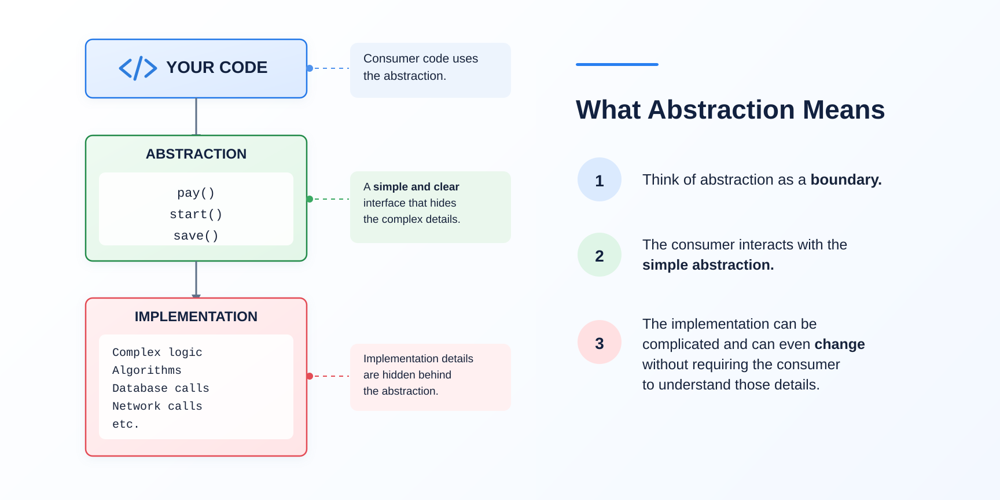

- Think of abstraction as a boundary between.
- The Teacher and Student can exist independently. Neither object owns the lifecycle of the other.
- The association can be one-to-one, many-to-one or many-to-many.
Mechanism of hiding unnecessary details and showing only essential details to the user by separating interface from
its impl.
Abstraction is the OOP principle of exposing only the essential operations of an object while hiding the implementation details
that are not necessary for the user of that object.
Main goal of the abstraction is to reduce the complexity of the design and implementation process of software system.
Main goal of the abstraction is to hide complexity of the system.
Abstraction also generalises by capturing the common essense among unrelated classes.
Abstraction can be achieved through interface and abstract class.
Method = Method header + method body.
Method header is an abstraction of a block of code.
Abstract method is independent of implementation which can have many implementations.
Abstraction: Complete abstraction can be achieved through interface.
Security: Hides implementation details and only show the important details of an object.
Multiple inheritance: Can be achieved through interface because a class can implements multiple interfaces.

Callers work with a small, essential set of operations instead of the full implementation, so the system is easier to understand and use.
Internal details stay hidden behind the interface, so sensitive state and logic cannot be accessed or misused from outside.
Code depends on an abstraction rather than a concrete class, so implementations can be swapped without touching the callers.
The implementation can be rewritten or optimised at any time; as long as the contract holds, nothing downstream breaks.
A class can implement many interfaces, so it can take on several abstract roles that a single-inheritance hierarchy could not express.
Abstraction captures the common essence among otherwise unrelated classes, letting one piece of code operate over many types.
An abstract class can share common implemented behaviour with all its subclasses while leaving the varying parts abstract.
Depending on an interface makes it simple to substitute mocks or stubs, so units can be tested in isolation.
public abstract class Shape {
# no implementation here
public abstract double area();
public void describe() {
System.out.println("Area = " + area());
}
}
public class Circle extends Shape {
private double r;
Circle(double r) { this.r = r; }
@Override
public double area() {
return Math.PI * r * r;
}
}Shape declares area() abstractly, hiding the maths.
Each subclass such as Circle supplies the details.
Callers use area() without knowing the implementation.
The abstract class cannot be instantiated on its own.